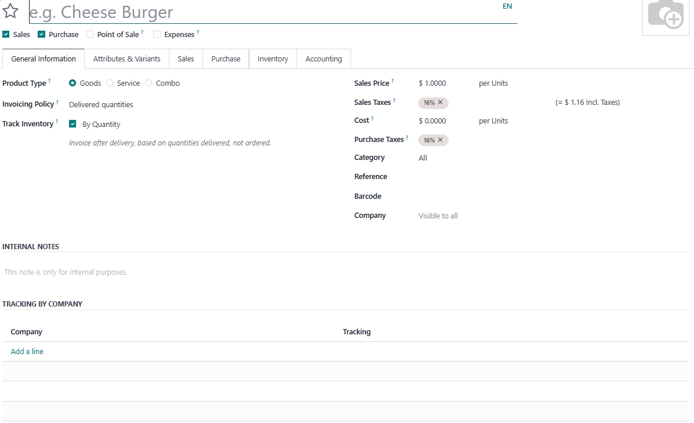

Product Lot Tracking per Company
By Pridecta
For Odoo 18 Community & Enterprise
Overview
Product Lot Tracking per Company allows you to define, for each company and product, whether lot or serial number tracking is required, fully supporting multi-company operations in Odoo 18.
Override the global product tracking rule and ensure each company follows its own inventory policies—perfect for manufacturers, distributors, and intercompany sales.
Main Features
- Configure lot/serial/no tracking per product and company
- Dynamic enforcement of lot/serial requirements during stock operations
- Easy setup with a new table in the product's General Information tab
- Compatible with Odoo 18 Community & Enterprise
- Perfect for intercompany sales and multi-company environments
How It Works
- Open any product template in Inventory > Products.
- In the General Information tab, find the new Tracking by Company section.
- Add or edit per-company tracking rules as needed.
- Odoo will now validate stock moves using the rule specific to the company performing the operation.
Use Cases
- Manufacturing company: Track lots for internal production, but disable for internal distribution companies.
- Intercompany purchase/sale: Supplier requires lot numbers, buyer company can receive without enforcing lots.
- Compliance with customer or market-specific traceability requirements in complex business groups.
Screenshot

Support and Contact
Odoo 18.0 Community & Enterprise – License: OEEL-1